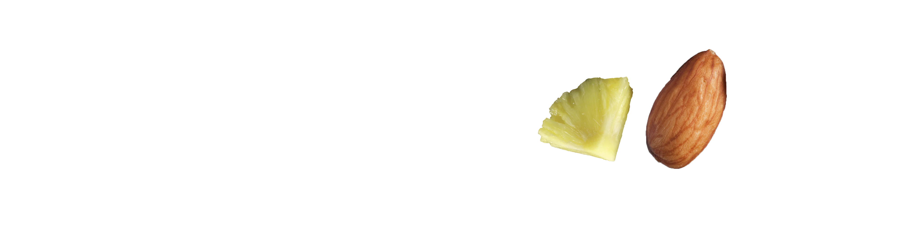

Nuesli
Description of the Project
Nuesli is a service that provides busy individuals with enough engery to get through the day. Many people loses out on daily nutrients in the morning, leaving them sluggish throughout the day. By having one bottle of Nuesli's overnight oats. They will have all the nutrients and energy to get through the day.
The objective was to develop a corporate identity for Nuesli. The identity should reflect the brand along with their customers.
Client: Nuesli
Service: Print, Branding, Identity, Web
Tools: Photoshop, Indesign, Illustrator, and Photography
LOGO
Nuesli's logo is all about the simplicity and the motion of the letters. The way the serifs creates a sense of motion, which is a part of their brand.

COLOR PALETTE
Nuesli's color palette includes muted tones to give the products a sense of stability and simplicity. There is also hints of bolder colors, that adds the livelihood of the brand.

TYPOGRAPHY
Throughout the brand, the typefaces that were used where Mrs Eaves and Open Sans. Mrs Eaves was chosen because of it's elegance and humble looking serifs. This font was used for all the headings, sub-heading, and quotes. Open Sans was paired perfectly being that they are clean and symmetrical, making it easy on the eyes. This typeface is used for body, quotes and captions.
STACKED TYPE
For our graphics, we created various styles of stacked type and rasterized images of dried fruits. This is used as graphic elements on our shippings boxes and thank you cards.
BOX & JARS
This is the final look of the overall brand, a brand that is wholesome and sincere. Nuesli's color palette and graphics brings the brand together.


GIFTS
Along with Thank You Cards, each subscription box will include some coasters and pins.
WEBSITE + MOBILE APP
I created a website and mobile app that was the aid with the product.
|